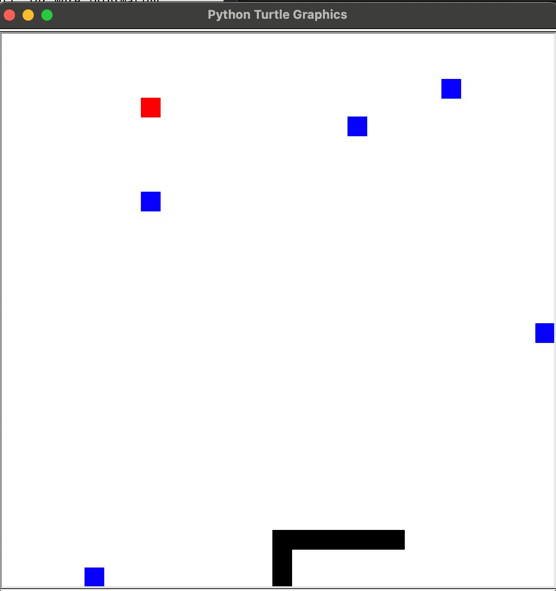

"MY PROJECTS"
Title: Conway's Game of Life
Description:
This project is a visual simulation of
Conway's Game of Life, the famous cellular
automaton created by mathematician John
Conway.
The game is played according to simple rules:
- A cell survives, dies, or is born depending on the number of neighbors.
- The system evolves automatically with each new generation.
- The visual result demonstrates emergent complexity: highly dynamic
structures can emerge, stabilize or disappear from simple patterns.
What I learned:
- Working with two-dimensional arrays and modeling loops
- Implementing Conway rules in Python
- Managing screen updates with Turtle graphics to improve performance
Technology Stack: Python, Turtle
GitHub Repo: Conway's Game of Life

Title: Classic Snake game
Description:
This is a simple version of the classic Snake
game, created in Python using the
Turtle module. The snake is controlled using
the keyboard and moves around the
grid, aiming to “eat” the red square (food)
while avoiding the blue blocks (obstacles)
and the edges of the screen.
What I learned:
- Real-time input processing in Python
- Collision detection
- Rendering game objects using turtle
- Managing game state (win/loss conditions).
Technology Stack: Python, Turtle
GitHub Repo: Snake game
Title: Smart Vacuum Cleaner
Description:
This project models a smart robot vacuum
cleaner navigating a 2D environment
filled with walls and dirt using AI search
algorithms. The robot can use BFS, DFS,
UCS, Greedy, or A* to decide how to reach
dirty rooms and clean them efficiently.
Key features:
- Full-featured graphical interface with manual control
- Support for multiple search strategies
- Customization of cost/heuristics (Manhattan, Euclid, left/upward bias)
- Color visualization of explored states and final paths
- Modular codebase utilizing an agent/environment architecture.
What I learned:
- Designing and visualizing the behavior of AI agents in two-dimensional
environments
- Implementing and comparing multiple search strategies (BFS, A*, Greedy)
- Creating intelligent cost functions and heuristics
- Developing a GUI using tkinter in Python
Technology Stack: Python, tkinter, object-oriented programming, AI search
algorithms
GitHub Repo: Smart Vacuum Cleaner

“Programming Experience”
I’m comfortable working with:
- Python – for scripting, automation, simulations, and AI projects
- C++ – for systems programming, data structures, and performance-intensive tasks
- HTML – for building and structuring websites
I’m currently focused on growing as a creative developer and learning how to combine
AI, interactivity, and design into functional web and software experiences.